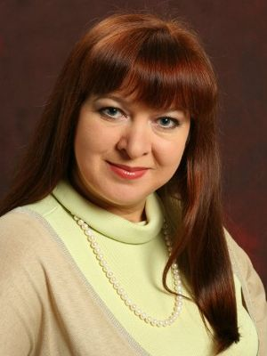

Мы попали в «Репетитор» в 11 классе после того, как на семейном совете решили, что нашей дочери
Насте нужна помощь в подготовке к ЕГЭ по истории и обществознанию. От ребят из класса, которые
уже занимались в этом центре, мы узнали о том, что в «Репетиторе» работает Андреева Елена
Борисовна – первоклассный учитель. После первого знакомства мы были просто очарованы Еленой
Борисовной. Ее доброжелательность и профессионализм очень помогли Насте достичь высокого
уровня знаний по этим предметам и успешно сдать экзамены на достойные баллы.
Сейчас она студентка 2 курса Санкт-Петербургского университета факультета международных
отношений. Те знания, которые она получила на занятиях с Еленой Борисовной и умение приобретать их,
помогают ей сейчас успешно учиться в одном из самых престижных вузов страны.
Подготовка к ЕГЭ и ГИА
по всем предметам
Уважаемые взрослые!
Родители школьников!
Странно было бы спрашивать у вас, считаете ли вы своего ребенка самым удивительным, талантливым и способным. Мы уверены, что ответ очевиден!
Тогда еще несколько вопросов:
- Как давно ваше драгоценное чадо прибегало из школы с радостной улыбкой и горящими от счастья глазами, размахивая дневником, в котором только «4» и «5»?
- Когда в последний раз Вам звонила «классная» Вашего ребенка, выплескивая нескончаемый поток слов благодарности и похвалы в его адрес?
- Как часто сообщение о предстоящем родительском собрании вызывало у Вас приятные ощущения и заставляло с нетерпением ждать указанного дня впредвкушении только приятных эмоций?
Если все описанное выше – действительная реальность Вашей жизни, мы счастливы!
И искренне рады!
Но если кое-что еще не совсем так, в Ваших силах это исправить!
Мы, лучшие учителя города Ейска, приглашаем Ваших замечательных детей для дополнительных занятий по всем школьным предметам, результатом чего непременно станет и улучшение успеваемости в школе, и успешная сдача ГИА и ЕГЭ по любому из них.
Это выполнимо? - Да!
Это может быть достигнуто Вашим ребенком с Вашей помощью!
Уже 4 года наши преподаватели, профессионалы высочайшего уровня, передают свои знания по всем предметам школьникам-старшеклассникам и выпускникам средних учебных заведений. Ребята успешно сдают экзамены и становятся студентами ВУЗов в различных городах нашей страны, реализуя свои самые невероятные мечты и устремления!
Долгополова Татьяна Викторовна
Если Вы действительно хотите, чтобы Ваши замечательные дети учились в школе с радостью, сдавали выпускные экзамены в приподнятом настроении и добивались всего намеченного в дальнейшей жизни – звоните прямо сейчас по телефону 8-918-232-40-55, так как
- количество мест у нас ограничено;
- запись на 2014/2015 учебный год уже началась!
Добролюбова Людмила Викторовна
Я слышала очень много положительных отзывов о Вашем центре, о профессионализме педагогов.
Результаты ГИА в прошлом году у моей дочери Анастасии на высшем уровне. Детям заниматься комфортно.
Я рекомендую своим знакомым приводить детей в «Репетитор».
Несмотря на большое количество учителей, занимающихся репетиторством, настоящих профессионалов среди них, то
есть тех, кто способен дать качественные знания, не так уж много.
Ваши педагоги смогли найти индивидуальный подход к ребенку, стать авторитетом в ее глазах, дать хорошие
знания.
Успехов Вам!
Буренко Алла Борисовна
Моей дочери Кате в школе очень трудно давалась физика. Поэтому возникла необходимость в дополнительных
занятиях.
Мы пришли в «Репетитор» в прошлом году, когда Катя училась в 10 классе.
Физику здесь преподает замечательный учитель – Каликина Ольга Владимировна.
Дочь с удовольствием ходила на занятия и довольно быстро появились результаты: физика стала ей понятна,
она научилась решать задачи, отвечать на теоретические вопросы, появилось больше хороших оценок в школе.
Сейчас Катя заканчивает 11 класс и готовится сдавать ЕГЭ по физике, потому что собирается поступать в
технический ВУЗ.
Умение Ольги Владимировны интересно и доступно объяснять материал помогло Кате полюбить физику!
Большое спасибо! Я рекомендую всем своим знакомым выбирать для дополнительных занятий «Репетитор» и желаю
вам
здоровья и успехов!
Недилько Наталья Георгиевна
Мы пришли в «Репетитор» в прошлом году, когда моя дочь Карина была девятиклассницей и решила сдавать
ГИА по английскому языку.
И ей очень понравилось преподавание замечательного педагога Прониной Ольги Павловны.
Она подтянула английский с «0» до твердой «4», стала понимать грамматику.
Сдала ГИА на четверку. В 10 классе мы записались и на русский язык с намерением готовиться к сдаче ЕГЭ.
Благодаря интересным и качественным занятиям у Бондаренко Ирины Владимировны стали лучше оценки в школе по русскому.
Моей дочери нравится высокий уровень преподавания в центре и отношение педагогов к детям.
За время обучения Карины в «Репетиторе» я убедилась в том, что здесь не только грамотные учителя, но и отличные педагоги-психологи.
Поэтому всегда рекомендую центр своим знакомым. Хочу пожелать, чтобы происходящие в последнее время в
системе сдачи экзаменов изменения находили отклик в процессе преподавания в «Репетиторе».
Единственное, что может огорчить Вас, — это то, что мы занимаемся только с учениками 9, 10 и 11 классов.
Но дети так быстро растут! А то, что непременно порадует Вас, так это цена: 250 рублей за один астрономический час.
Занятия в 9-х и 10-х классах проводятся 2 часа в неделю, в 11-х классах – 3 часа в неделю по каждому предмету.
Гончаренко Ирина Владимировна
Мы знакомы с «Репетитором» уже третий год. Почему мы выбрали для дополнительных занятий этот учебный центр?
Потому что здесь возможно готовиться к экзаменам по всем предметам, которые нам нужны.
Моя дочь Яна занимается биологией у Елены Ивановны Драновской и русским языком у Ирины Владимировны
Бондаренко. Это очень сильные учителя!
Очень удобное для нас месторасположение центра – рядом с домом - тоже сыграло важную роль.
Цены за услуги весьма приемлемые для нас. Два года назад моя дочь сдала ГИА на «отлично», сейчас она
готовится к ЕГЭ.
Я с огромным удовольствием рекомендую «Репетитор» своим знакомым, так как здесь очень высокое качество
преподавания, доброжелательная атмосфера.
Моему ребенку очень нравится!
Преимущества нашего предложения очевидны:
- высокопрофессиональные педагоги;
- возможность дополнительных занятий по всем школьным предметам в одном месте;
- удобное для ребят расписание и индивидуальный подход;
- неформальные отношения ученик – учитель;
- психологическая помощь в преодолении страха перед экзаменами;
- занятия в уютной современной обстановке.
Кириллова Татьяна Николаевна
Мы услышали хорошие отзывы от других родителей. Посмотрели страничку в интернете о преподавателях и условиях
обучении.
В прошлом году наш сын Михаил готовился к ГИА по русскому языку, алгебре и физике — результатом на
экзаменах мы довольны.
В этом году он занимается русским языком. На занятиях детей готовят и краевым контрольным работам, что
придает им уверенности в течение учебного года на уроках в школе.
И еще Ирина Владимировна Бондаренко помогает разобраться в материале, который ребенок не усвоил в школе.
Будем обязательно ходить в «Репетитор» и на следующий год для подготовки к ЕГЭ. Занятиями очень довольны.
Оплата доступная.
Михаил рекомендует всем своим друзьям приходить заниматься в «Репетитор», потому что у вас учитель уделяет
внимание каждому ученику.
У вас хороший центр! Так держать!
Морозова А.К.
Я слышала от знакомых много положительных отзывов об учителях в «Репетиторе». По их рекомендации мы и пришли сюда.
Мой сын учится в школе в основном на «отлично», но нам необходимы максимально глубокие знания по предметам,
поэтому сейчас, в 10 классе, он занимается по химии, биологии, физике и русскому языку.
И в 11 классе мы обязательно будем продолжать здесь свое обучение, чтобы достичь высоких результатов на ЕГЭ.
Сыну здесь очень нравится, и я желаю всем учителям как можно дольше оставаться востребованными.
Большое вам спасибо!
Булавина Светлана Ивановна
Мы выбрали для дополнительных занятий для моей дочери Ангелины «Репетитор», потому что ей нужен был более высокий уровень обучения, чем в школе.
И передо мной возник насущный вопрос: как же подобрать опытного репетитора? Многие родители сталкиваются с проблемой репетиторства.
Ваш ребенок хочет поступить в ВУЗ и подтянуть свои знания? Остается одна задача – найти хорошего репетитора.
Я искала такого в газетах, по объявлениям, спрашивала у знакомых, но нашла на сайте в Интернете.
Так мы попали в «Репетитор».и наши ожидания оправдались. Уроки проходят плодотворно, в доброжелательной обстановке.
Елена Ивановна Драновская, учитель биологии, - прекрасный, грамотный и ответственный педагог, глубоко знающий
свой предмет и умеющий доступно объяснять его детям.
Группы маленькие, поэтому вся информация воспринимается и усваивается легко. Цена вполне нас устраивает.
Сейчас дочь учится в 9 классе, и мы точно будем заниматься в «Репетиторе» и в 10, и в 11 классе по биологии и химии.
Я советую всем родителям, желающим обеспечить успешное поступление своего ребенка в ВУЗ, воспользоваться
услугами «Репетитора».
И желаю Вам быть в контакте с родителями, предупреждать об изменениях в расписании. Было бы не лишним, если бы проводились родительские собрания.
Если у Вас еще есть вопросы, звоните прямо сейчас по телефону:
8-918-232-40-55 и получите ответы на них!
Напоминаем, что количество мест у нас ограничено!
Дорогой старшеклассник!
Любишь ли ты учиться?
Решил ли ты, чем будешь заниматься во взрослой жизни?
Уверен ли в своих знаниях по тем предметам, которые будешь сдавать на ГИА и ЕГЭ?
А может, тебя охватывает ужас только при мысли о предстоящих испытаниях?
Если даже ты не учишься в школе на «4» и «5», но у тебя есть искреннее желание добиться в жизни невероятных результатов, ты не безнадежен!
Твой успех – результат не случайности, а регулярных действий, которые полностью изменят тебя «заурядного» и превратят в «выдающегося».
«Я не смогу», «у меня не получится», «я никогда не буду отличником» - это не общие правила, это твои ограничивающие установки.
Их, к счастью, некоторые не соблюдают!
Есиков Сергей
Первый раз я пришел в «Репетитор», чтобы подготовиться к ГИА, чтобы получить достаточно знаний для
успешного прохождения аттестации в 9 классе. Сейчас я готовлюсь к ЕГЭ. Мне начала нравиться алгебра, ведь я
начал ее понимать. А еще я начал получать хорошие оценки в школе. Я и раньше занимался с учителями
дополнительно, но в «Репетиторе» они намного лучше и интереснее. Потому что, по моему мнению, преподают
очень хорошие, добрые и отзывчивые учителя. И большие профессионалы своего дела!
Приходите в «Репетитор», не пожалеете!
Приходите в «Репетитор», не пожалеете!
А может, ты учишься только на «5» и уверен в успешной сдаче экзаменов, но твоя цель – получить максимально высокий балл на ЕГЭ?
Мы гарантированно поможем тебе!
Почувствуй, как это – получать удовольствие от учебы, быть уверенным в себе каждый день: на уроке, на контрольной работе, на экзамене и так далее.
Представь себе это, и, если тебе это нравится, звони прямо сейчас по телефону 8-918-232-40-55
Уже 4 года замечательные учителя помогают десяткам ребят получить ошеломляющие результаты в учебе и на выпускных экзаменах.
Яшин Иван
Я пришел в «Репетитор», так как мне необходимо было получить побольше знаний для сдачи ЕГЭ. Здесь
занимался мой двоюродный брат, ему очень нравилось, он хорошо сдал экзамены и поступил в престижный
университет на бюджет. Я пришел в 9 классе, сейчас заканчиваю 11. Я получил высокие знания по алгебре,
физике и русскому языку, о чем говорят мои оценки в школе. Мне больше всего нравится, что здесь преподают
отлично квалифицированные учителя.
Моя мама рекомендовала бы вам сделать подгруппы, разделив учеников по уровню знаний.
Решайтесь! Приходите в «Репетитор» и набирайтесь знаний!
В одном месте ты можешь заниматься по всем предметам, которые ты выбрал. Мы составим удобное для тебя расписание и гарантируем твой рост, развитие, продвижение в успешном получении знаний!
Тарасова Вика
Я понимала, что у меня недостаточно знаний для сдачи ЕГЭ. Прямо рядом с моим домом находится
«Репетитор». Я пришла туда в 10 классе дополнительно заниматься математикой. Я и раньше ходила к репетитору,
но я не люблю находиться с учителем один на один, а здесь мы занимаемся в небольшой группе. И это классно!
Занятия проходят очень интересно, особенно в этом году, когда я занимаюсь и литературой, которую преподает
Бондаренко Ирина Владимировна. Те результаты, которая я получила здесь, меня вполне устраивают.
Я рассказываю о «Репетиторе» всем своим знакомым и рекомендую ученикам младших классов приходить для
подготовки к экзаменам именно сюда. А всем преподавателям желаю всего самого наилучшего!
Подумай, хочешь ли ты, чтобы твоя жизнь характеризовалась такими утверждениями: невероятная уверенность в себе, высокая самооценка, смелость и ярко выраженное чувство собственного достоинства? Хочешь ли ты иметь ошеломляющие результаты в учебе? Мы гарантируем, у нас ты получишь все, чего хочешь, что можешь и чего достоин!
Ильина Катя
Я пришла в «Репетитор», потому что выпускники нашей школы прошлых лет, которые здесь занимались, сдали
выпускные экзамены на достаточно высоком уровне. Также потому, что здесь преподают знакомые, очень сильные
учителя. Я занимаюсь физикой в группе Каликиной Ольги Владимировны с 10 класса. Мои знания по физике стали
намного глубже, улучшились оценки в школе. Я и раньше занималась с репетитором индивидуально, но в
«Репетиторе» занятия отличаются, они проходят в группе. Для меня такое обучение лучше. Еще мне нравится
обстановка в центре, отношения между учителями и детьми очень добрые и доверительные.
Я рекомендую всем младшим ребятам приходить заниматься дополнительно в «Репетитор»! Я желаю Вам процветания и расширения,
так как желающих заниматься гораздо больше, чем сейчас у Вас может поместиться.
Если ты хочешь иметь невероятные результаты в учебе, звони прямо сейчас по телефону:
8-918-232-40-55
Звони прямо сейчас, потому что количество мест у нас ограничено!
Занятия проводятся:
- для 9-классников – 2 часа в неделю – 2 раза по 1 часу;
- для 10-классников – 2-х часовое занятие 1 раз в неделю;
- для 11-классников – 3 часа в неделю – 2 раза по 1,5 часа.
- русский язык;
- литература;
- математика;
- физика;
- химия;
- биология;
- английский язык;
- обществознание;
- история.
Булавина Ангелина
Я пришла в «Репетитор», потому что нуждалась в дополнительных занятиях по биологии, чтобы в будущем успешно сдать Единый Государственный Экзамен.
За время обучения я более подробно изучила анатомию человека, узнала много нового и интересного.
Я укрепила полученные знания и использовала их на практике, выполняя различные работы и тесты.
Раньше я занималась только на курсах в школе, но занятия в «Репетиторе» более эффективны и интересны, так как учитель находит подход к каждому ученику.
Мне очень понравился мой педагог по биологии Драновская Елена Ивановна, ее методы обучения, я по-настоящему полюбила эту науку.
Всем ребятам, которые хотят углубить свои знания, закрепить изученное, восполнить пробелы в знаниях,
я советую обратиться за помощью в «Репетитор». Здесь опытные педагоги всем помогают.
Я желаю, чтобы в «Репетитор» приходили сообразительные и усердные ученики, которые бы в будущем радовали педагогов своими высокими результатами.
Мы ждем тебя! Запись на новый учебный год уже началась! 8-918-232-40-55
-

Елена Владленовна Милованова
Учитель прикасается к вечности: никто не может сказать, где кончается его влияние.
Г. Адамс -
Елена Ивановна Драновская
Учитель - это человек, который выращивает две мысли там, где раньше росла одна
Э.Хаббард
-

Ольга Павловна Пронина
Только живой пример воспитывает ребенка, а не слова, пусть самые хорошие, но не подкрепленные делом
А. Макаренко -
Елена Борисовна Андреева
Учитель, могущий наделить своих воспитанников способностью находить радость в труде, должен быть увенчан лаврами
Э. Хаббард -

Ирина Владимировна Бондаренко
Учитель – человек, который может делать трудные вещи лёгкими
Р.Эмельсон